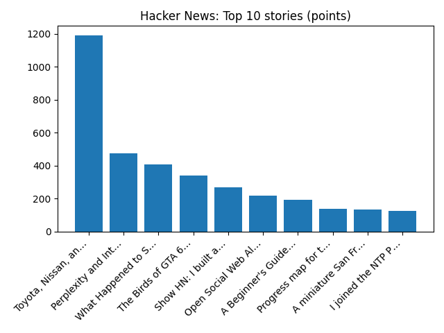

What strike on Russian ship in Libya says about spread of Ukraine war
BBC — World
YOUR DAILY INTELLIGENCE BRIEF · 2026-11-23
Global watch: What strike on Russian ship in Libya says about spread of Ukraine war, Anthropic options post solid debut, trailing SpaceX record - Reuters.
Northern Virginia: Massanutten Academy trustees vote to keep school open - The Northern Virginia Daily, Thanksgiving Nor'easter To Drench VA As Storms Take Shape - Patch.

Global coverage includes What strike on Russian ship in Libya says about spread of Ukraine war; Anthropic options post solid debut, trailing SpaceX record - Reuters; Huang returns as Nvidia CEO after Trump intervention in abrupt board reversal - Reuters. Local coverage includes Massanutten Academy trustees vote to keep school open - The Northern Virginia Daily; Thanksgiving Nor'easter To Drench VA As Storms Take Shape - Patch.

Jeff Grayshon
He played at representative level for Great Britain and England, and at club level for Dewsbury, Cronulla-Sutherland Sharks, Bradford Northern, Leeds, Featherstone Rovers and Batley, as a fullback, prop, second-row, or loose forward, and coached at club level for Batley. Grayshon continued playing until he was 45 for Batley before taking over as coach at Batley.
https://en.wikipedia.org/wiki/Jeff_Grayshon
The Emergence of Dark Nebula Lynds 1251
Runs so far today: 2